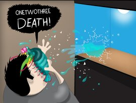

O Stomatopoda possui o mais complexo sistema de visão de cores do mundo animal, pois enxergam 12 cores primárias, correspondentes aos
12 pigmentos distintos presentes em sua retina.Você pode saber mais, acessando o link "Sobre".
O predador mortal

Os Stomatopodas são capazes de desferir um dos mais rápidos e violentos golpes do reino animal, um soco que pode apresentar a velocidade de um tiro calibre .22 (equivalente a
720 km/h) e uma pressão de impacto de 600 N/cm².[3] Essa força esmagadora é a responsável pelo seu título de "lagosta-boxeadora" e é capaz de facilmente quebrar a carapaça de um caranguejo, as conchas duras e calcificadas de gastrópodes ou até mesmo quebrar o vidro reforçado de um aquário (Ref. wikipedia)